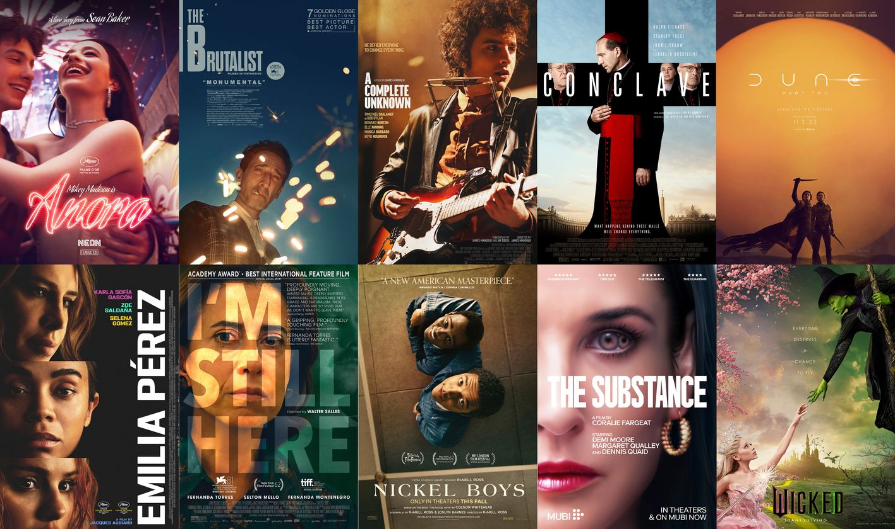

Oscar 2025

O Oscar® 2025 aconteceu neste domingo (02/02/2025) em Los Angeles, nos Estados Unidos. O grande vencedor foi "Anora",
com cinco prêmios. "Ainda estou aqui" levou a estatueta de Melhor Filme Internacional.
Veja lista completa de filmes e artistas vencedores:
- Melhor Filme
- Anora - Venecedor
- O Brutalista
- Um Completo Desconhecido
- Conclave
- Duna: Parte II
- Emilia Pérez
- Ainda Estou Aqui
- Nickel Boys
- A Substância
- Wicked
- Melhor Atriz
- Fernanda Torres - "Ainda Estou Aqui"
- Mikey Madison - "Anora" - Venecedor
- Demi Moore - "A Substância"
- Karla Sofia Gascón - "Emilia Pérez"
- Cynthia Erivo - "Wicked"
- Melhor Ator
- Ralph Fiennes - "Conclave"
- Adrien Brody - "O Brutalista" - Venecedor
- Timothée Chalamet - "Um Completo Desconhecido"
- Colman Domingo - "Sing Sing"
- Sebastian Stan - "O Aprendiz"
- Melhor Atriz Coadjuvante
- Ariana Grande - "Wicked"
- Monica Barbaro - "Um Completo Desconhecido"
- Felicity Jones - "O Brutalista"
- Isabella Rossellini - "Conclave"
- Zoe Saldaña - "Emilia Pérez" - Venecedor
- Melhor Ator Coadjuvante
- Kieran Culkin - "A Verdadeira Dor" - Venecedor
- Guy Pearce - "O Brutalista"
- Edward Newton - "Um Completo Desconhecido"
- Yura Borisov - "Anora"
- Jeremy Strong - "O Aprendiz"
- Melhor Direção
- Sean Baker - "Anora" - Venecedor
- Brady Corbet - "O Brutalista"
- James Mangold - "Um Completo Desconhecido"
- Jacques Audiard - "Emilia Pérez"
- Coralie Fargeat - "A Substância"
- Melhor Filme Internacional
- "Ainda Estou Aqui" (Brasil) - Venecedor
- "Emilia Pérez" (França)
- "Flow" (Letônia)
- "A Garota da Agulha" (Dinamarca)
- "A Semente do Fruto Sagrado" (Alemanha)
- Melhor Montagem
- "Anora" - Venecedor
- "O Brutalista"
- "Conclave"
- "Emilia Pérez"
- "Wicked"
- Melhor Figurino
- "Um Completo Desconhecido" - Ariane Phillips
- "Conclave" - Lisy Christl
- "Nosferatu" - Linda Muir
- "Wicked" - Paul Tazewell - Venecedor
- "Gladiador 2" - Janty Yates
- Melhor Trilha Sonora
- "O Brutalista" - Venecedor
- "Conclave"
- "Emilia Pérez"
- "Wicked"
- "O Robô Selvagem"
- Melhor Som
- "Um Completo Desconhecido"
- "Duna: Parte 2" - Venecedor
- "Emilia Pérez"
- "Wicked"
- "O Robô Selvagem"
- Melhor Canção Original
- "El Mal" - "Emilia Pérez" - Venecedor
- "The Journey" - "Batalhão 6888"
- "Never Too Late" - "Elton John: Never Too Late"
- "Mi Camino" - "Emilia Pérez"
- "Like a Bird" - "Sing Sing"
- Melhor Roteiro Adaptado
- "Emilia Pérez"
- "Conclave" - Venecedor
- "Um Completo Desconhecido"
- "Nickel Boys"
- "Sing Sing"
- Melhor Roteiro Original
- "O Brutalista"
- "Anora" - Venecedor
- "A Substância"
- "A Verdadeira Dor"
- "Setembro 5"
- Maquiagem e Penteado
- "Um Homem Diferente"
- "Emilia Pérez"
- "Nosferatu"
- "A Substância" - Venecedor
- "Wicked"
- Melhor Animação
- "Flow" - Venecedor
- "Divertida Mente 2"
- "Memoir of a Snail"
- "Wallace e Gromit: Vengeance Most Fowl"
- "O Robô Selvagem"
- Melhor Curta de Animação
- "Beautiful Men"
- "In the Shadow of Cypress" - Venecedor
- "Magic Candies"
- "Wander to Wonder"
- "Yuck!"
- Melhor Curta-metragem com Atores
- "Alien"
- "Anuja"
- "I'm Not a Robot" - Venecedor
- "The Last Ranger"
- "The Man Who Could Not Remain Silent"
- Maquiagem e Penteado
- "Um Homem Diferente"
- "Emilia Pérez"
- "Nosferatu"
- "A Substância" - Venecedor
- "Wicked"
- Melhor Documentário
- "Black Box Diaries"
- "No Other Land" - Venecedor
- "Porcelain War"
- "Soundtrack to a Coup d'Etat"
- "Sugarcane"
- Melhor Documentário de Curta-Metragem
- "A Única Mulher na Orquestra" - Venecedor
- "Incident"
- "Death by Numbers"
- "Instruments of a Beating Heart"
- "I Am Ready, Warden"
- Efeitos Visuais
- "Alien: Romulus"
- "Better Man"
- "Duna: Parte 2" - Venecedor
- "Kingdom of the Planet of the Apes"
- "Wicked"
- Melhor Fotografia
- "O Brutalista" - Venecedor
- "Duna: Parte 2"
- "Emilia Pérez"
- "Maria"
- "Nosferatu"
- Melhor Design de Produção
- "O Brutalista"
- "Conclave"
- "Duna: Parte 2"
- "Nosferatu"
- "Wicked" - Venecedor